Overview
Source Creation
Target Creation
Orchestration
ADP Workforce Now is a cloud-based platform for HR management software and Idaptive is a cloud platform. An orchestration between these two applications will simplify data transfer and updates. Aquera provides the platform for this orchestration, where ADP Workforce Now is the source and Idaptive is the target. Before executing the orchestration, user needs to create the source and target applications.
Go to ADP Workforce Now application from your Aquera Admin page, provide Display Name and Description and click Create
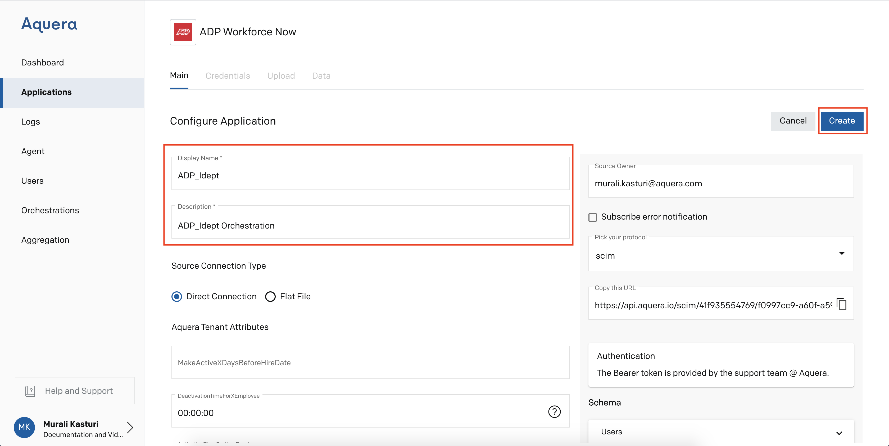
Go to Credentials, add the token provided by Aquera in the given box and click Save Changes
(Follow the step-by-step procedure given in this guide to get the token)
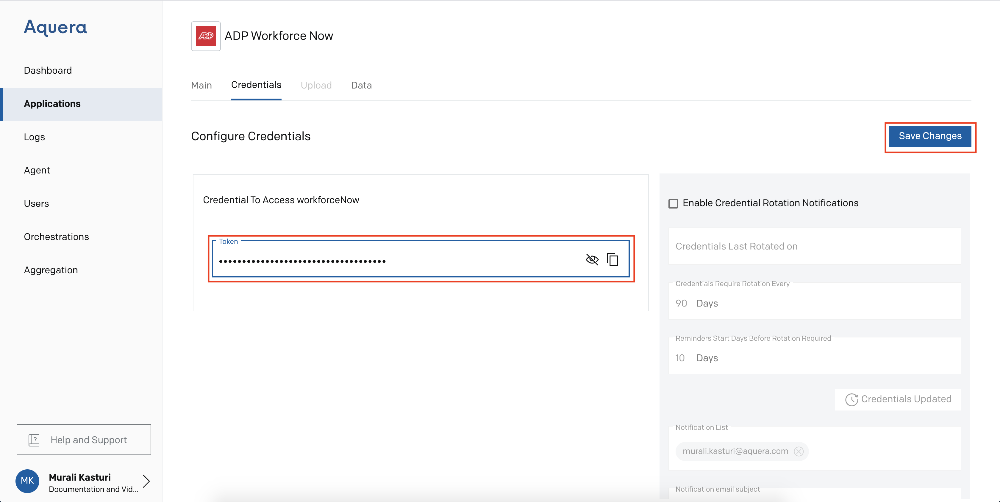
Click Data to check the inputs at the source
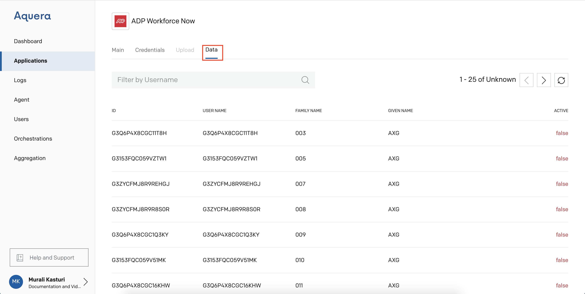
Go to Idaptive application from your Aquera Admin page, provide Display Name and Description
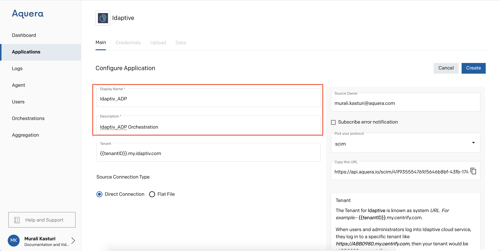
To get the Token, logon to your Idaptive home page by using your credentials. Token can be fetched from the login URL
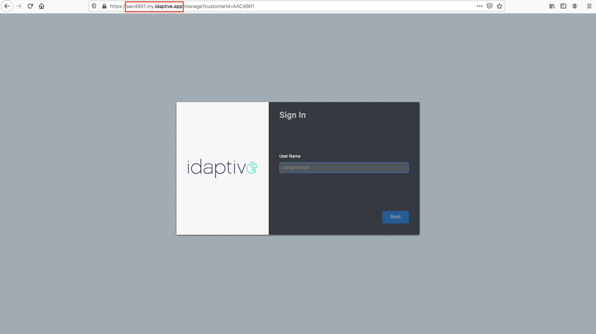
Add the Token and click Create
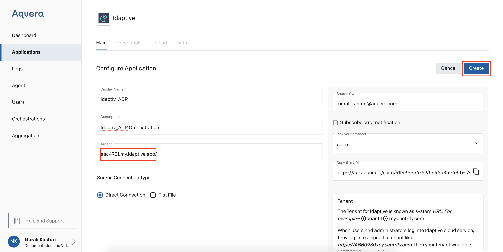
Go to Credentials, provide your username and password for Idaptive and click Save Changes
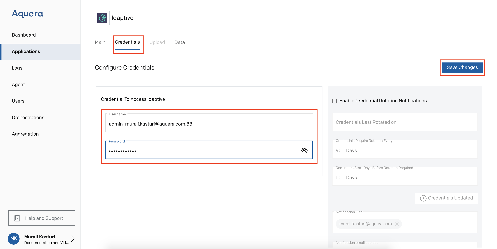
Click Data to check the inputs at the target
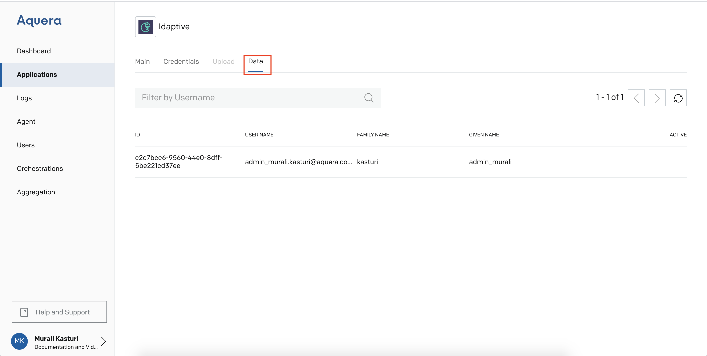
Go to Orchestrations from the Aquera Admin page and click Add Orchestration 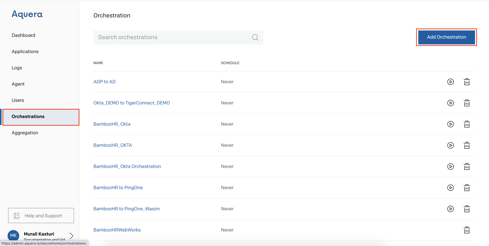
Provide a name to the Orchestration, select SCIM-to-SCIM as orchestration type, select the Source Application and Target Application and click Create 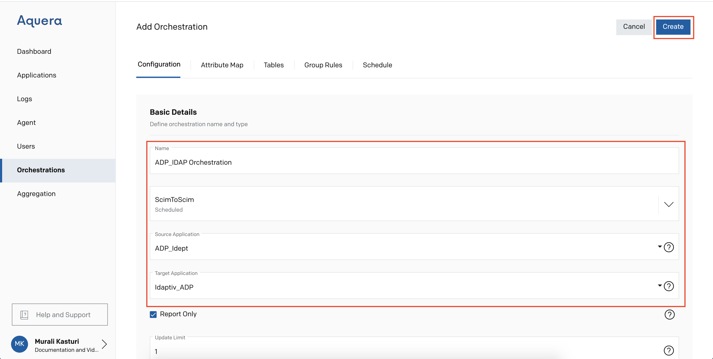
Go to Orchestrations and click Run icon next to the newly created orchestration
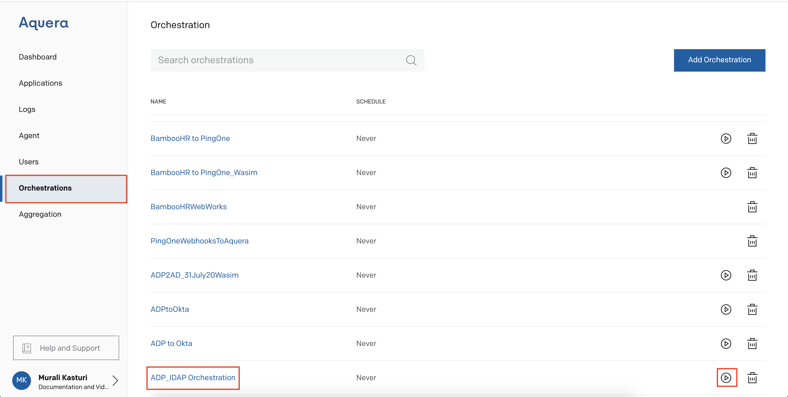
Go to Logs, select Orchestration and click Success 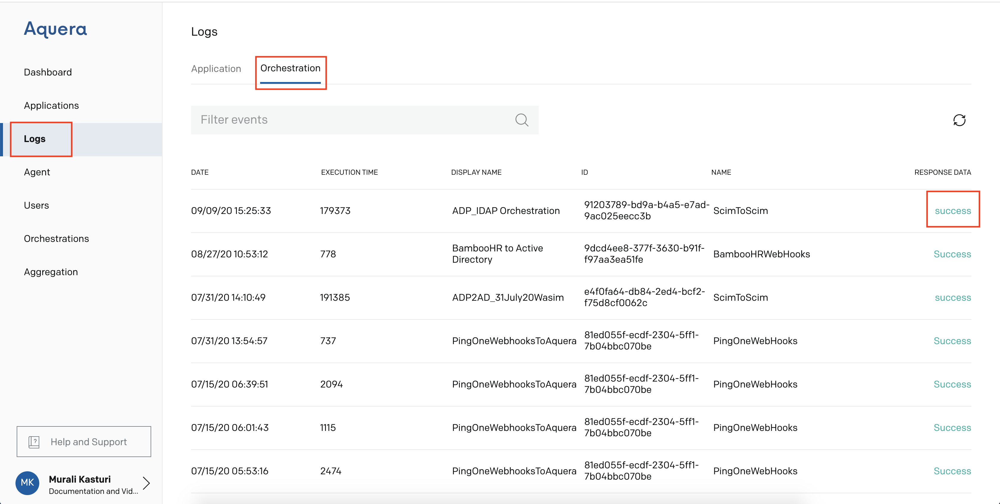
Copy the Source Code from the logs
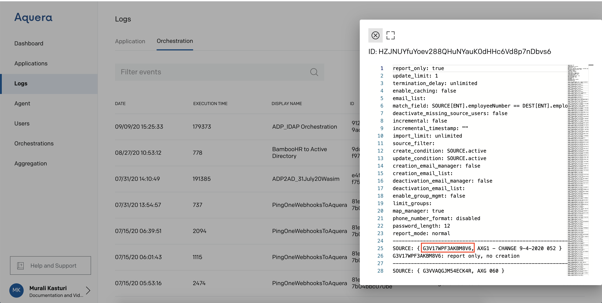
Go to Orchestrations, click Attribute Map, paste the Source Code in the box and click Search Icon 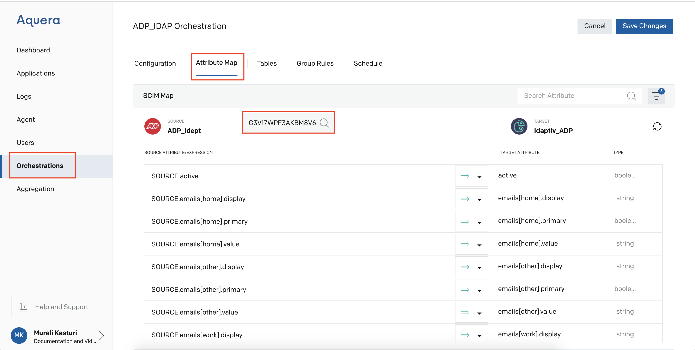
Slide Preview to get the attribute mapping
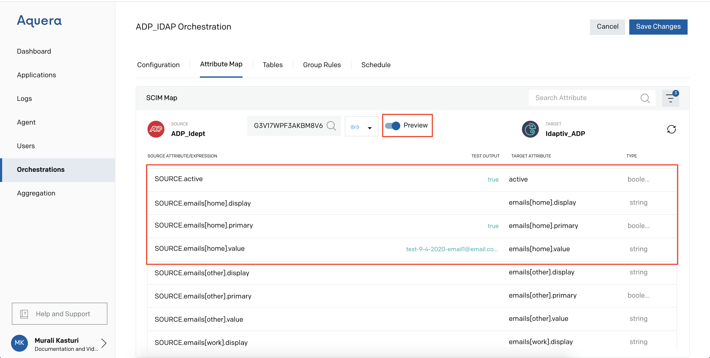